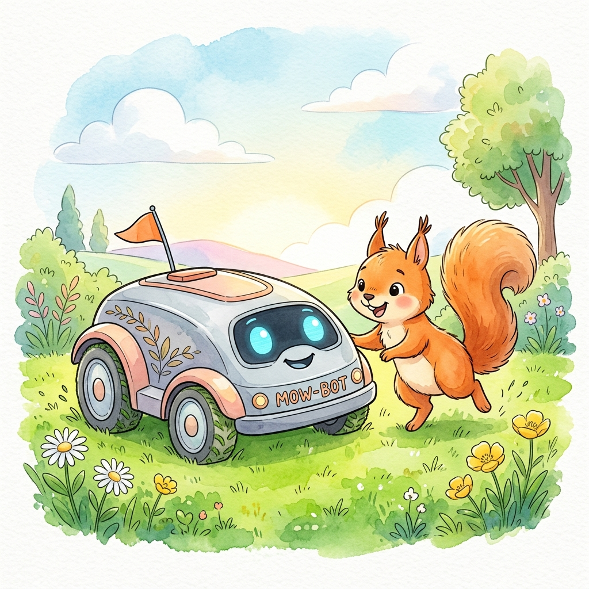
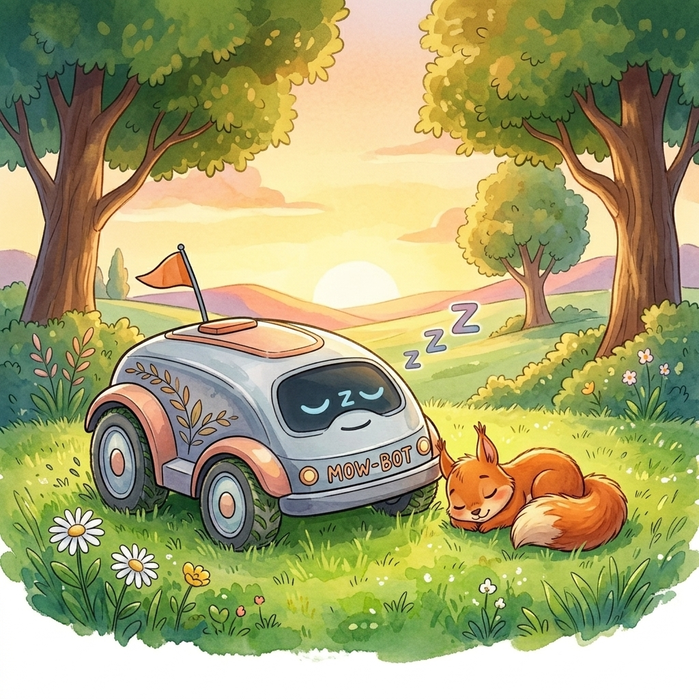
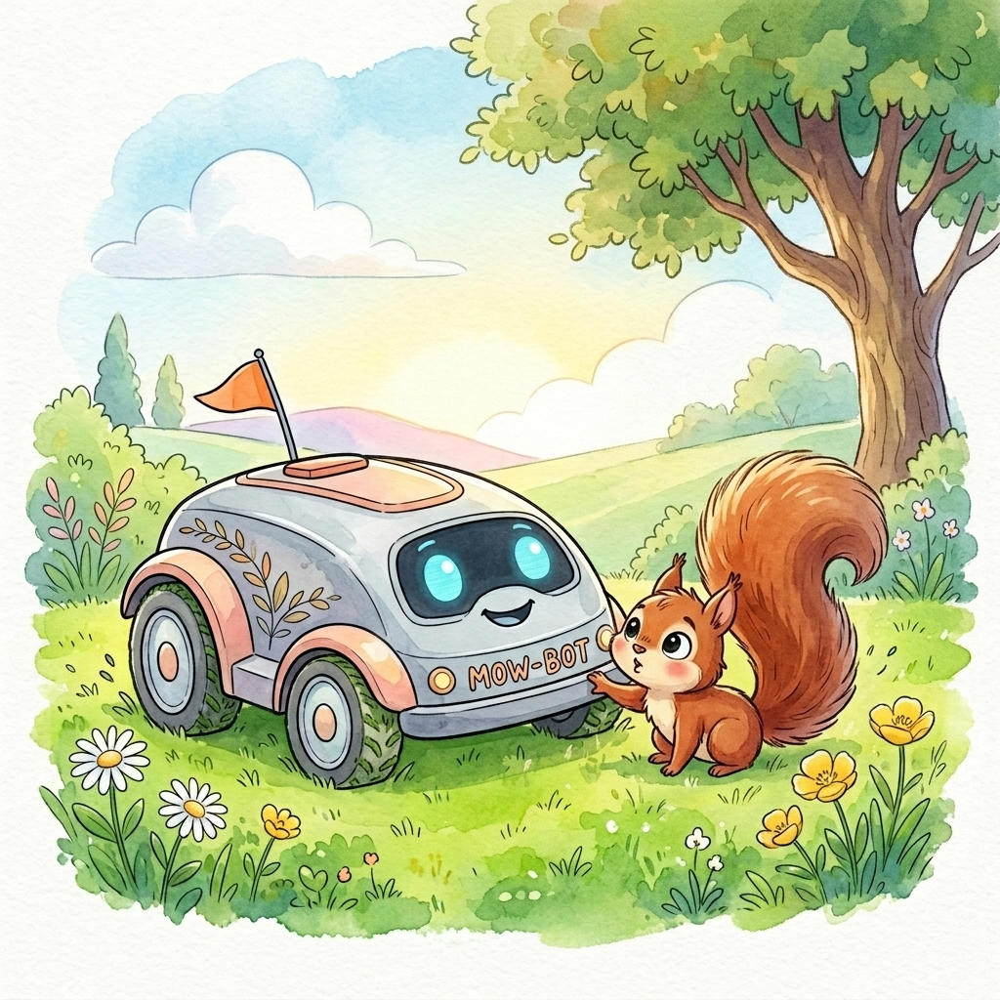
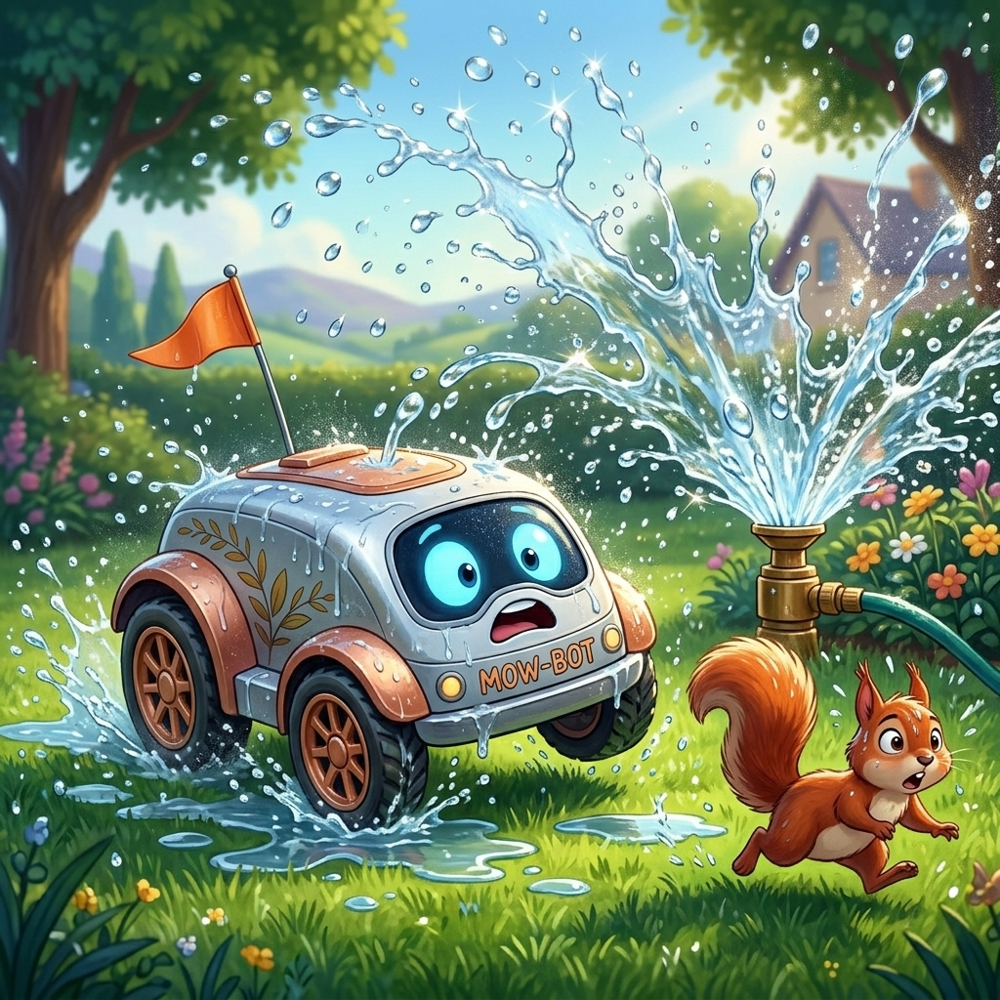
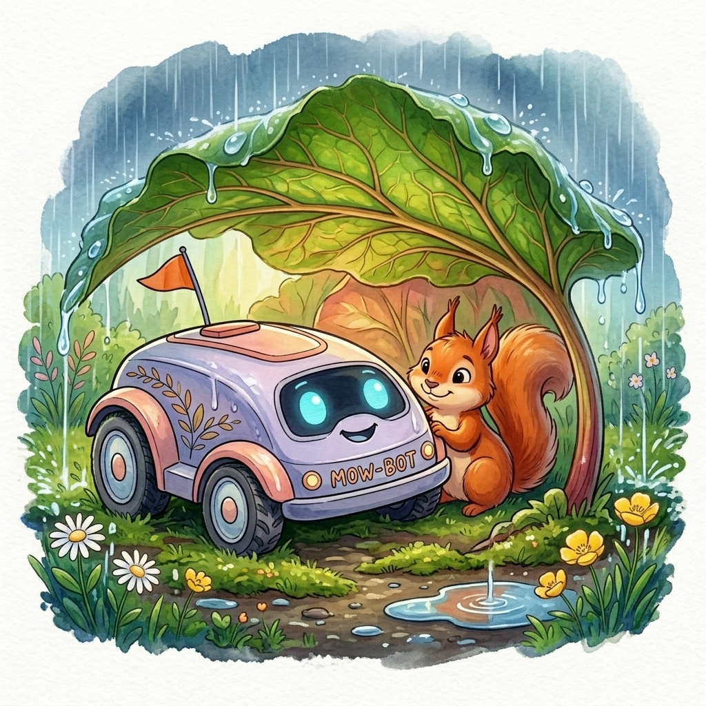

L'Univers de José
Le Robot Tondeuse
Bienvenue dans le jardin de José ! 🤖🍃 Accompagne notre robot préféré et son ami Panache l'écureuil.
Imprime ton Coloriage
{kind=link}
{kind=link}
{kind=link}
Fabrique ton masque !
Deviens aussi rapide et malicieux que Panache l'écureuil grâce à ce masque en papier à découper !
✂️ Patron du MasqueLe Savais-tu ?
L'Histoire de José

Le soleil se lève doucement sur le grand jardin, éclairant les perles de rosée sur l'herbe fraîche. C'est l'heure pour José de se réveiller. Ses petits voyants clignotent joyeusement, et avec un doux ronronnement, il s'étire et commence sa tournée. L'herbe chatouille ses roues alors qu'il trace de jolies lignes vertes parfaitement tondues.

Pendant qu'il travaille, une petite tête rousse sort des buissons. C'est Panache l'écureuil ! Très curieux, Panache s'approche de José et commence à courir à côté de lui. L'écureuil fait de grands bonds majestueux, essayant de faire la course avec la petite machine. José répond avec un joyeux "Bip bip !", très heureux d'avoir de la compagnie.

Soudain, un sifflement retentit : Pschiit ! L'arrosage automatique vient de s'allumer. De grands jets d'eau se mettent à tournoyer dans les airs, créant de jolis arcs-en-ciel. José s'arrête net. Oh là là, les robots et l'eau, ça ne fait pas bon ménage ! Il ferme vite son clapet de sécurité. Panache, lui, trouve ça très drôle et saute au milieu des gouttes.

Voyant que son ami robot n'aime pas la pluie artificielle, Panache le guide jusqu'à une zone sèche. L'écureuil cueille une feuille de rhubarbe géante et la tient comme un grand parapluie vert au-dessus de José. À l'abri et bien au sec, les deux amis regardent le spectacle de l'eau qui danse en attendant que le soleil sèche le jardin.